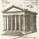
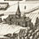
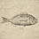

Explore the Digital Collection

Introduction
Antonio Lafreri's Speculum Romanae Magnificentiae and the digital collection.

Itineraries
Choose a virtual itinerary to explore the collection, with an expert as your guide.

Search and Browse
Search and browse the collection.

Links
View some related sites as well as links to thesauri, standards, and tools used in cataloguing.